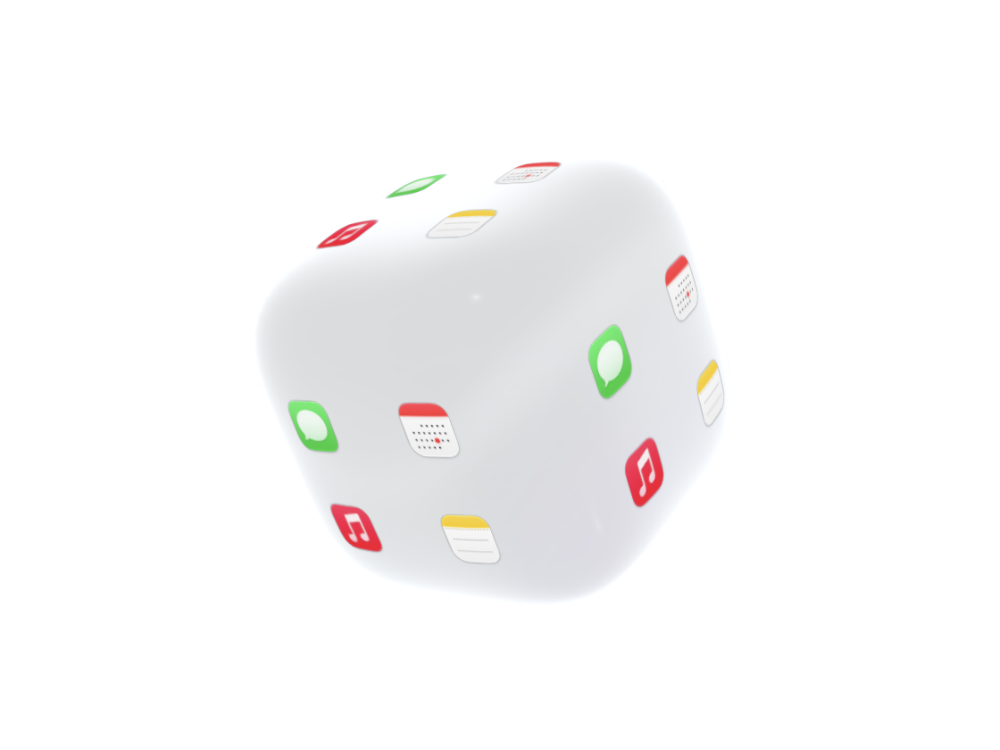

让桌面，
多一个维度。
应用、文件、剪贴板与灵感。
在一个通透的立方体里，轻盈连接。
为 macOS 与 Windows 而生。免费，开源。

真实原生渲染 · 示例图标
小小的立方。
大大的顺手。
常用的东西，不必藏在层层窗口里。把六个面留给你的日常：工作、创作、浏览、整理。转一转，就在眼前。
六个面，24 个快捷入口。
把常用，
放在触手可及处。
应用、文件夹、文件、网页和系统设置，都有自己的位置。拖入添加，点击打开；也可以先展开一个面，再挑选。
- 网页标题随图标显示，长标题悬停可读。
- 左键拖动移动，右键拖动或滚动旋转。
- Windows 可按名称搜索已安装应用。
看得见的质感。
摸得到的回应。
玻璃的通透，史莱姆的弹性。悬停即展开，移开便安静。九款主题，让每一面都合你心意。
悬停显现，1.1–4.0 倍放大。
双色渐变，自由调配。
10 / 20 秒，主题自动轮换。
减少动态效果，依然从容。
以上为玻璃材质原生渲染；史莱姆材质支持随指针牵引与弹性回弹。系统版本与辅助功能设置会影响材质效果。
桌面有秩序。
思路不打断。
需要时，它就在手边。不需要时，它懂得退到一旁。
收起，是为了更专注。
贴近屏幕边缘，离开后收成一条纤细的控制柄。鼠标靠近，立方体轻柔归位。全屏时自动隐藏，位置始终记得。
macOS 实际动效录制。
显示器，也顺手掌控。
从菜单栏或托盘切换 Type-C / HDMI。每台显示器保存独立的输入映射，切换结果经过回读确认。macOS 还能独立调节支持的屏幕亮度。
输入切换支持 macOS / Windows；外接显示器需支持 DDC/CI，首次使用请按实体菜单校准端口代码。
查看平台与硬件要求复制过的，
都能接着用。
文字、图片和临时灵感，不必来回复制。一个快捷手势，让这一轮工作的上下文留在手边。
Ctrl1s
按住一秒。
找回刚才的灵感。
在立方体外单独长按 Ctrl，快捷历史就在指针附近出现。释放后点选复制，也能编辑、删除；搜索和多选合并，请打开完整历史管理。
先预览，再决定。
空白整理、大小写、JSON、URL 编解码，在本地完成。明确复制或保存，才会写入结果。
常用内容，少打一遍。
给常用文案分组、收藏，或把 {{变量}} 留给模板。预览填充结果，再复制或粘贴到验证过的目标。
轻一点。
也私密一点。
静置时放缓，隐藏时停止渲染。让注意力和图形资源，都留给手头的事。
代码公开，欢迎查看历史留在这一轮工作里。
剪贴板会话历史只保存在内存，不落盘、不云同步。退出应用，即刻清除。你主动保存到常用内容的记录另行本地持久化。
数据与选择，都在本地。
核心功能本地运行，无遥测。配置可预览导入导出，导入前自动备份。版本提醒默认关闭；手动检查或启用提醒时会访问 GitHub。
每一面，
都想得更周全。
从功能到边界，完整了解 T-Cube。
外观与交互
- 玻璃与史莱姆双材质；9 款主题、自定义双色渐变，每 10 或 20 秒自动轮换。
- 悬停显示图标并放大 1.1–4.0 倍；移开后恢复。空闲旋转、滚轮与双指滚动、右键拖动旋转。
- macOS 26+ 支持原生 Clear Liquid Glass，早期系统使用磨砂回退；Windows 使用独立玻璃渲染。
- Windows 11 22H2+ 设置与快捷面板使用 Acrylic；旧系统、减少透明度与高对比度使用实色回退。尊重减少动态效果。
启动与入口
- 六个面、每面四项，共 24 个快捷槽位；支持应用、文件夹、文件、网页和平台系统设置入口。
- 拖入配置，直接点击打开，或先展开四图标面板。移除入口不会删除原文件或应用。
- 网页标题本地绘制，长标题省略并可悬停查看；不请求网络 favicon。
- Windows 提供可搜索的应用选择器，支持已注册系统／Store 应用与便携 .exe。
桌面与显示器
- 靠近屏幕外侧约 32 逻辑像素，离开约 0.8 秒后收成 10 × 56 控制条；悬停恢复，原位置不变。
- macOS 约 0.36 秒吸附、0.46 秒展开；可中断，减少动态效果时跳过空间过渡。
- 全屏自动隐藏、屏幕四角／中央快速放置、拖动保存位置；显示器检测不读取屏幕像素。
- macOS 独立调节屏幕亮度。Apple 屏幕走原生控制，外接屏幕需要 Apple Silicon 与可用 DDC/CI。
- 双平台 Type-C／HDMI 输入切换，按显示器保存实测代码并回读确认。硬件兼容性取决于固件、驱动和连接路径。
剪贴板与常用内容
- 会话历史仅在内存中；启动后自动记录，可暂停，不导入启动前的剪贴板，退出即清除。
- 文字最多 100 条：单条 64 KiB、总计 2 MiB；图片最多 10 张：单张 8 MiB PNG、总计 32 MiB、1600 万像素上限。
- 立方体外单独长按 Ctrl 1 秒唤出可拖动快捷历史，支持复制、编辑和删除；每次重新唤出回到历史列表。打开完整历史管理可搜索、多选合并。
- 空白整理、大小写转换、JSON 格式化／压缩、URL 编解码均在本地预览；复制或明确保存后才写入。图片不含 OCR。
- 常用内容支持分组、收藏、搜索、结构化字段与 {{变量}} 模板。macOS 用 ⌘⇧Space，Windows 用 Ctrl+Shift+Space 唤出。
- 粘贴前验证目标焦点；macOS 自动粘贴需要辅助功能授权。无法安全恢复焦点时保留复制内容，供手动粘贴。
性能、数据与维护
- 静置节能暂停渲染：macOS 默认开启，Windows 默认关闭。隐藏时停止渲染；macOS 隐藏／遮挡时延后主题纹理更新。
- 复用纹理并限制缓存；修改外观即时保存，仅重置当前外观，不影响入口和位置。
- 配置导入／导出提供预览、导入前备份、恢复与失效入口重连；损坏配置保留。显示器映射独立保存，不含在启动器配置导出中。
- 安装版首次启动默认开启登录自启，可关闭并记住；尊重系统批准和禁用状态。
- 核心功能本地运行，无遥测、无云同步。手动检查或启用默认关闭的 6 小时版本提醒时访问 GitHub；公开构建经发布页手动下载安装。
给桌面，
一个新的开始。
T-Cube 免费开源。选好平台，即刻下载。
v0.22.11当前稳定版本
macOS
原生 Swift，通透而流畅。
下载 macOS 版macOS 15+ · Apple Silicon · DMG
4.0 MB
本地 ad-hoc 签名，未 Developer ID 公证。
Windows
熟悉的桌面，多一种可能。
下载 Windows 版Windows 10 22H2 / 11 · x64 · EXE
120.0 MB
自带运行环境，未 Authenticode 签名。
升级前请先退出旧版，并保留现有配置。系统可能显示安全提示。
还有这些，
你可能想知道。
需要哪些权限？
核心启动和显示器检测不需要屏幕录制权限。macOS 自动粘贴需要辅助功能授权；登录自启可能需要系统批准。显示器控制还取决于硬件连接。
显示器切换一定可用吗？
不是。显示器需支持 DDC/CI；请用实体菜单分别切到两个输入，在当前活动主机读取代码后保存。检测到设备不代表兼容。切换后失去回读时，请用活动主机或显示器实体菜单恢复。
剪贴板会保存到磁盘吗？
会话历史不写磁盘、不云同步，退出即清除。你明确保存到常用内容的记录会本地持久化。部分隐私排除标记会被跳过，但未标记的敏感内容仍可能被会话历史记录，可随时暂停或清空。
下载后如何升级？
先正常退出旧版，再安装新版本，并保留现有配置。macOS 当前为 ad-hoc 签名、未做 Developer ID 公证；Windows 安装包未做 Authenticode 签名，系统可能显示安全提示。仅从可信发布渠道下载。